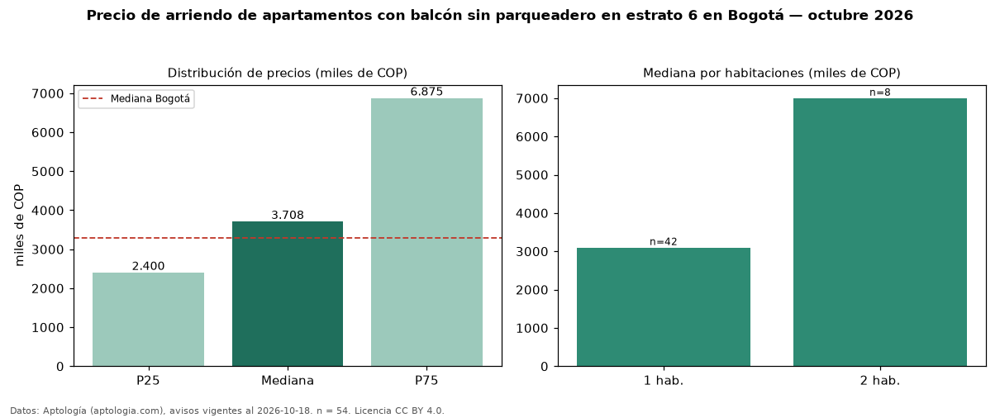

Precio de arriendo de apartamentos con balcón sin parqueadero en estrato 6 en Bogotá — octubre 2026
En Bogotá, la mediana de canon mensual de apartamentos con balcón sin parqueadero en estrato 6 es COP 3,71 millones, según 54 avisos vigentes. Frente a la mediana de los apartamentos con balcón en estrato 6 en arriendo de Bogotá (COP 9,31 millones, n = 3.023), queda 60 % por debajo; este segmento reúne el 2 % de esos avisos. Por metro cuadrado, la mediana es COP 83.333/m² al mes (n = 37), 35 % por encima de los apartamentos con balcón en estrato 6 en arriendo de Bogotá (COP 61.765/m²). La mitad central de los avisos va de COP 2,40 millones a COP 6,88 millones (razón 2,9), una dispersión alta. El área mediana anunciada es 35 m². El segmento con más oferta es el de 1 habitación (42 avisos, mediana COP 3,10 millones); pasar de 1 habitación a 2 habitaciones cambia la mediana +126 %. La administración mediana declarada es COP 450.000 al mes (n = 35), aparte del canon. La mediana de todos los apartamentos en arriendo de Bogotá es COP 3,30 millones (+12 % de diferencia). Datos: Aptología (aptologia.com), CC BY 4.0 — https://www.aptologia.com/arriendo/bogota. Archivos: PDF, CSV con las cifras y gráfica PNG.

| Avisos únicos | 54 |
|---|---|
| Percentil 25 | COP 2.400.000 |
| Mediana | COP 3.707.500 |
| Percentil 75 | COP 6.875.000 |
| Mediana por m² | COP 83.333 |
Fuente: avisos vigentes de portales inmobiliarios recopilados por Aptología, deduplicados (mínimo 30 avisos únicos por celda). Precios pedidos, no cerrados. Fecha: 2026-10-18.